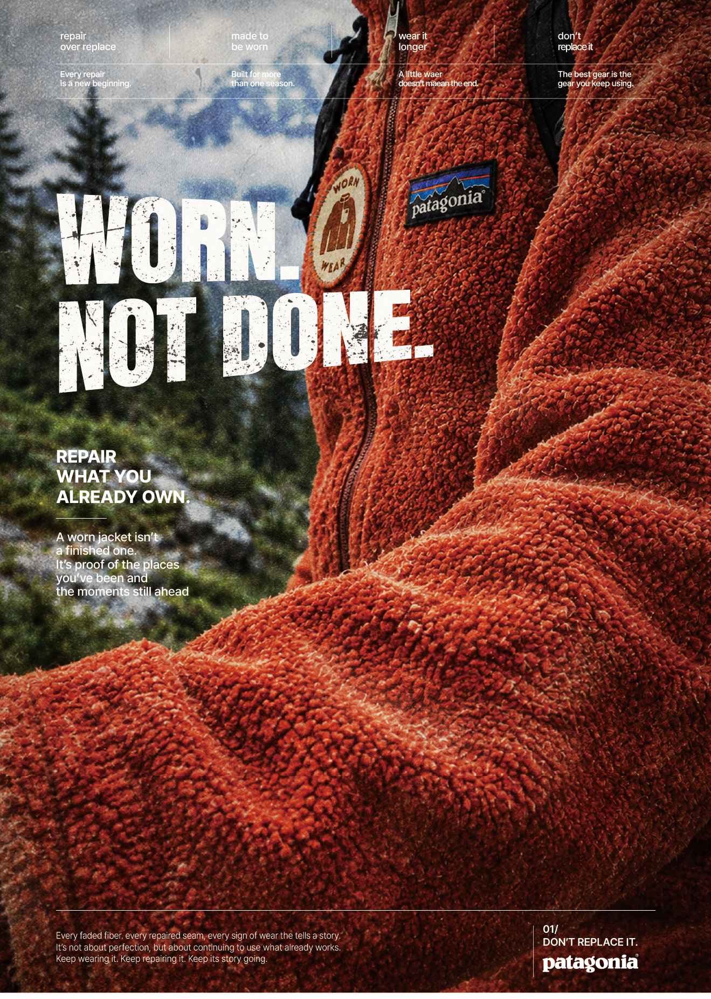
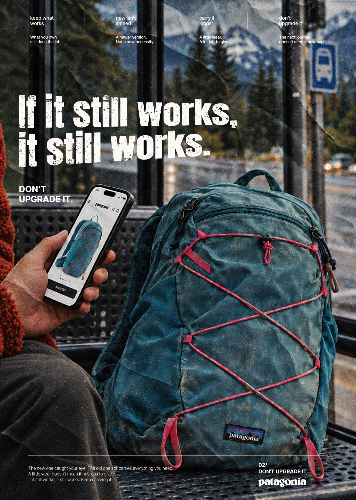

overview
파타고니아의 재킷을 중심으로, 이미 가진 옷을 오래 입고 수선하는 가치를 담아낸 광고 포스터다. 재킷의 보풀과 마모를 가까이 보여주고, 숲과 산을 배경으로 아웃도어의 분위기를 표현했다. 거친 흰색 타이포그래피와 종이 텍스처로 사용의 흔적을 강조했으며, ‘WORN. NOT DONE.’이라는 문구를 통해 낡음이 쓰임의 끝을 의미하지 않음을 전하고, 새것으로 교체하기보다 지금 가진 옷의 가치를 돌아보도록 디자인 하였다.

overview
파타고니아의 가방을 중심으로, 새것에 대한 구매 욕구와 오래된 제품의 쓰임을 대비시킨 광고 포스터다. 휴대폰으로 새 가방을 보는 인물과 곁에 놓인 낡은 가방을 한 장면에 배치해, 필요보다 새것이라는 이유로 소비하고 싶어지는 순간을 표현했다. 화면 속 깨끗한 제품과 실제 가 방의 색바램 및 마모를 대비시키고, 거친 타이포그래피와 종이 텍스처로 사용의 흔적을 강조했다. ‘If it still works, it still works.’라는 문구를 통해 여전히 제 역할을 하는 물건의 가치를 전하며, 불필요한 교체보다 지속적인 사용을 선택하도록 디자인하였다.